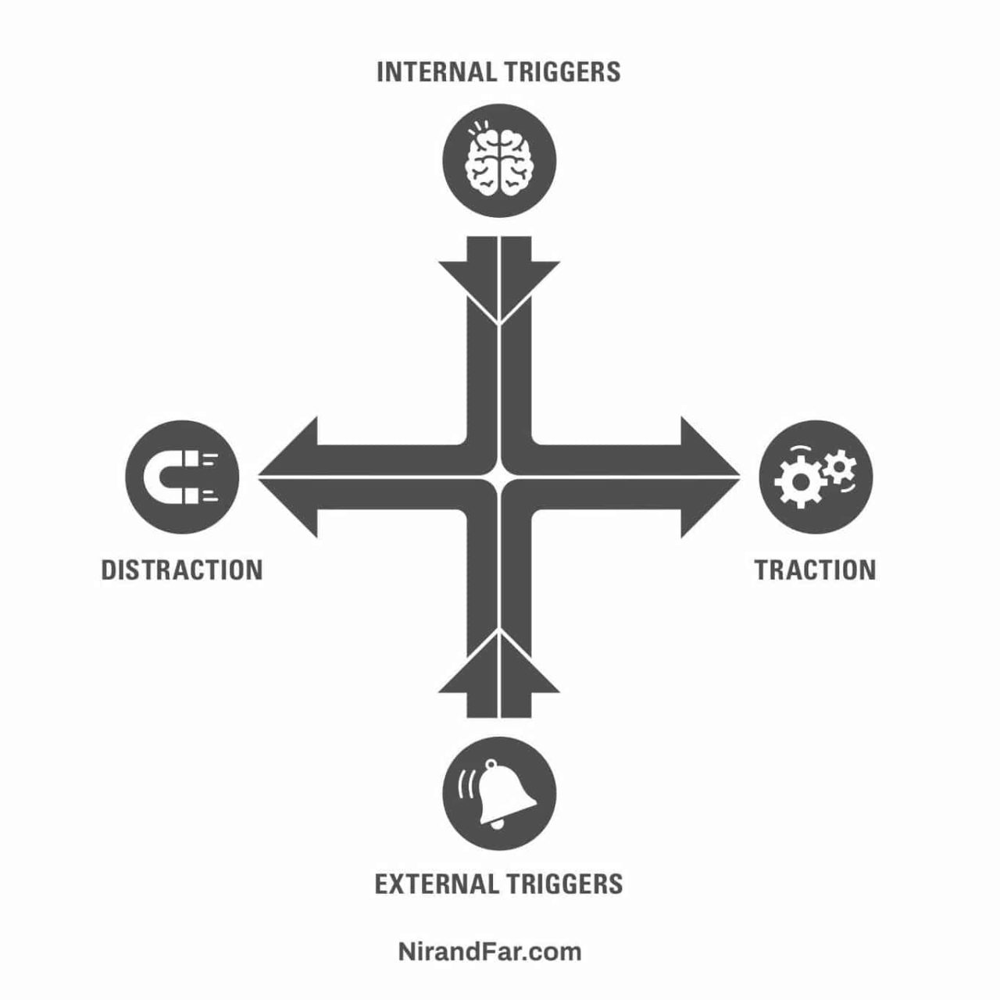

Distractions come in many sizes and shapes. To be effective in our work we need to recognize and learn how to handle whatever distractions come our way. Consider the following collection of distractions, their descriptions, and ideas for managing them. Provided by the CS 2350 students of summer 2017.
There are a lot of different ideas for how to deal with distractions. In fact, it is easy to find lists of ways to manage distractions. The lists are many different lengths and a variety of ideas. Following is a list of lists. Each item in the list links to web page that provides a list of ways to manage distractions.
I love eating healthy and often. This can lead to serious distraction. I can be working away and think "I need to eat something." Then my mind goes to work figuring out what to eat that is healthy, how to prep it, and wondering if I have the stuff to make it. Then off to the kitchen I go to fix it. After that there is the eating. Sometimes to save time I bring the food back to my desk thinking I will work while I eat but really I get very little done while I am eating. The whole process is pretty time-consuming. And since it is healthy it seems like I am doing a "good" thing even though my work productivity is suffering.
My most effective way to manage this distraction is to plan ahead. I can plan the best times to stop and eat. That way I don't eat too often or forget to eat (which can make me less effective even if I keep working.)Then I can prep the food ahead of time before I start work. That way when it is time to eat my break from work is much shorter.

Electronics are super important in my day to day life. I'm going into Computer Science, so being on my phone or computer is part of my life now. What comes from being on my phone or computer so often, is it's really easy to get distracted from my work. Whenever I see a notification, or start losing motivation it's really easy to open up YouTube, Snapchat, Instagram, or any other form of social media. And once I open up one of those social medias, it's really hard to get off. Sometimes I don't end up doing work again when I stop, so getting distracted by social media isn't a good thing.
The way I avoid using social media, or losing motivation, is I turn off notifications, and I will tell myself if I get a certain amount of work done in a certain amount of time, that will leave me with more time in the end to do what I want to do. So instead of just taking a 30 minute break I can take a short 5 minute break, and get more work done so I can spend a couple hours relaxing after I do a certain amount of work. Whether that be finishing an assignment, or doing some of it so I can do more another day.
| Title | Author | Link |
|---|---|---|
| A New Theory of Distraction | Joshua Rothman |
|
| What Does Wikipedia Have To Say about Distraction? | Wikipedia |
|
| Learn How To Avoid Distraction In A World That Is Full Of It | Nir And Far |  |